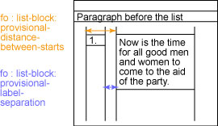
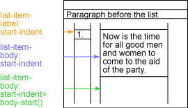
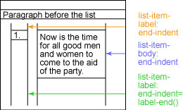

September 20, 2003
XSL-FO学习笔记(2)
 这次主要学习列表(list)、表格(table)、多页布局、页脚页眉、页编码、链接(link)等在FO的定义。
这次主要学习列表(list)、表格(table)、多页布局、页脚页眉、页编码、链接(link)等在FO的定义。
1、列表
主体结构如下：
| <fo:list-block> | 主结构 |
| <fo:list-item> | 列表项定义 |
| <fo:list-item-label> | Label定义 |
| <fo:block/> | |
| </fo:list-item-label> | |
| <fo:list-item-body> | Label说明信息定义 |
| <fo:block/> | |
| </fo:list-item-body> | |
| </fo:list-item> | |
| ... 更多 <fo:list-item>项 ... | |
| </fo:list-block> |

<fo-listblock>元素的provisional-distance-between-starts 特性定义 <fo:list-item-label> 的开始部分与 <fo:list-item-body> 的开始部分之间的距离。provisional-label-separation 特性定义 <fo:list-item-label> 的结束部分与 <fo:list-item-block> 的开始部分之间的距离。
 <fo:list-item-label> 和 <fo:list-item-block> 元素的 start-indent 特性分别定义了从正常的起始页边距（列表之上段落的起始位置）到 <fo:list-item-label> 或 <fo:list-item-body> 的开始部分的距离。

<fo:list-item-label> 和 <fo:list-item-body> 元素的end-indent 特性定义从正常的结束页边距（列表之上段落的结束位置）和 <fo:list-item-body> 元素的结束之间的距离。
编号列表<OL>
<fo:block>
<xsl:number value="position()" format="1."/>
</fo:block>
</fo:list-item-label>
符号列表<UL>，用UTF-8定义字符
<fo:block>•</block>
</fo:list-item-label>
对自定义列表，最简单的办法是将术语(label)放在单个行上并以黑体字显示它，接着在下一行开始该术语(label)的定义.
2、表格(table)
xsl-fo与html对照
| XSL-FO 元素 | HTML 元素 |
|---|---|
| <fo:table> | <table> |
| <fo:table-body> | <tbody> （未普遍使用） |
| <fo:table-column> | 该信息在 HTML <table> 元素的 cols 属性中。 |
| <fo:table-row> | <tr> |
| <fo:table-cell> | <td> |
| <fo:table-caption> | <caption>，虽然 XSL-FO 对标题和表必须出现在源文档中的方式施加了更多限制。 |
有例如下：
<fo:table-column column-width="150pt"/>
<fo:table-column column-width="150pt"/>
<fo:table-body>
<fo:table-row>
<fo:table-cell border-style="solid"
border-color="black" border-width="1pt"
padding-before="3pt" padding-after="3pt"
padding-start="3pt" padding-end="3pt">
<fo:block>Some text</fo:block>
</fo:table-cell>
<fo:table-cell border-style="solid"
border-color="black" border-width="1pt"
padding-before="3pt" padding-after="3pt"
padding-start="3pt" padding-end="3pt">
<fo:block>Some more text</fo:block>
</fo:table-cell>
</fo:table-row>
<fo:table-row>
<fo:table-cell border-style="solid"
border-color="black" border-width="1pt"
padding-before="3pt" padding-after="3pt"
padding-start="3pt" padding-end="3pt">
<fo:block>First cell, last row</fo:block>
</fo:table-cell>
<fo:table-cell border-style="solid"
border-color="black" border-width="1pt"
padding-before="3pt" padding-after="3pt"
padding-start="3pt" padding-end="3pt">
<fo:block>Last cell, last row</fo:block>
</fo:table-cell>
</fo:table-row>
</fo:table-body>
</fo:table>
合并单元格
<fo:table-cell>的 number-columns-spanned 和 number-rows-spanned属性可以将单元格合并起来，其值集是数值。
表头
<fo:table-head>可含有几个<table-row>，下面一级就是<table-cell>了。
表标题，使用如下：
<fo:table-caption>
...
</fo:table-caption>
<fo:table>
...
</fo:table>
</fo:table-and-caption>
3、多页布局序列
通过利用<fo:conditional-page-master-reference>并借助其master-reference指明布局名，page-position或odd-or-even指明页面条件。
<fo:repeatable-page-master-alternatives>
<fo:conditional-page-master-reference
master-reference="first" page-position="first"/>
<fo:conditional-page-master-reference
master-reference="left" odd-or-even="even"/>
<fo:conditional-page-master-reference
master-reference="right" odd-or-even="odd"/>
</fo:repeatable-page-master-alternatives>
</fo:page-sequence-master>
4、页脚页眉
要在页面上创建浮于文本主体上下的页眉和页脚，可以使用
5、页码编号
用<fo:page-number/>获得，用<fo:page-sequence master-reference="standard" initial-page-number="57" format="i" />来设定显示格式（罗马）和开始编号（57）
6、链接
将id属性加入任何一元素，都可以生成锚点(anchor)。利用fo:basic-link 元素的 internal-destination属性指定锚点即可建立链接。在这fo:basic-link元素与其结束标签之间是链接文本。
特殊的页号引用
<fo:page-number-citation >元素的ref-id属性指定的锚点，在显示时可以转换为锚点所在页面的页码显示。
对于链接到web的链接，可以用fo:basic-link的external-destination属性来指定，如例：
7、fop对xsl-fo进行了扩展，提供了定义pdf文件的“书签”的功能。
8、汉字文档
显示汉字需要特别处理。
1）建立font metrics文件，对ttc或ttf有不同的方法。
java org.apache.fop.fonts.apps.TTFReader -ttcname "SimSun" C:\WINNT\Fonts\simsun.ttc simsun.xml
-ttcname后面指定需要从ttc文件中提取的字体名称,两个命令中都要注意大小写。
2）修改$FOPHOME/confi/userconfig.xml，在</fonts>前面增加
<font-triplet name="mysimsun" style="normal" weight="normal"/>
</font>
<font metrics-file="simkai.xml" kerning="yes" embed-file="c:\WINNT\fonts\simkai.ttf">
<font-triplet name="mysimkai" style="normal" weight="normal"/>
</font>
3）将simkai.xml, simsun.xml放在$FOPHOME目录下，因为fop.sh或fop.bat就在这个目录下。运行
4）1.fo可以从这儿下载。1.fo是根据参考文献2修改而来。
参考文献：
1、XSL－FO高级技术
http://www-900.ibm.com/developerWorks/cn/education/xml/x-xslfo2/tutorial/index.html
2、如何在程序中嵌入FOP
http://www-900.ibm.com/developerWorks/cn/xml/x-fop/index.shtml
3、FOP相关技术
http://www.javaresearch.org/article/showarticle.jsp?column=46&thread=2042